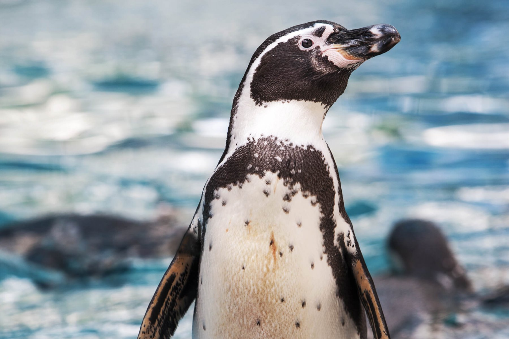
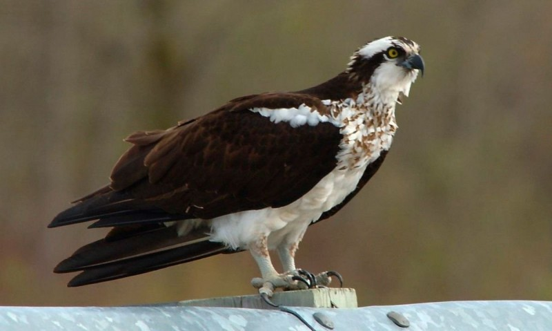

-

Bondzù is an education and awareness initiative using the new means
of communication that the internet enables. Makes heavy use of
social media, smartphone apps, and web pages. What we seek is to
give animals in captivity a dignified life.
-
Ideally, animals should live in their habitat; however, there are
many animals in captivity that it is impossible to release, because
they could not adapt to a wild environment. Our contribution is to
give people information and ignite their love for nature. There are
many institutions that do their best to keep these captive animals
in the best possible shape.

-

But these institutions need that their efforts and contributions to
be known to receive the support of the people, to show solidarity
and to be willing to financially support their activities in favor
of the preservation of the species. Bondzù works every day so that
people can enjoy live images of animals.
-
The research and development department is working on the design of
various robotic devices and toys to serve as environmental
enrichment and contribute to greater physical activity for animals
in captivity. Bondzù promotes the love of animals, but above all, an
attitude of respect towards all living beings.
